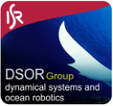

Pegasus Simulator
Overview
Pegasus Simulator is a framework built on top of NVIDIA Omniverse and Isaac Sim. It is designed to provide an easy yet powerful way of simulating the dynamics of multirotors vehicles. It provides a simulation interface for PX4 integration as well as custom python control interface. At the moment, only multirotor vehicles are supported, with support for other vehicle topologies planned for future versions.


If you find Pegasus Simulator useful in your academic work, please cite the paper below. It is also available here.
@misc{jacinto2023pegasus,
title={Pegasus Simulator: An Isaac Sim Framework for Multiple Aerial Vehicles Simulation},
author={Marcelo Jacinto and João Pinto and Jay Patrikar and John Keller and Rita Cunha and Sebastian Scherer and António Pascoal},
year={2023},
eprint={2307.05263},
archivePrefix={arXiv},
primaryClass={cs.RO}
}
Developer Team
This simulation framework is an open-source effort, started by me, Marcelo Jacinto in January/2023. It is a tool that was created with the original purpose of serving my Ph.D. workplan for the next 4 years, which means that you can expect this repository to be mantained, hopefully at least until 2027.
- Project Founder
Marcelo Jacinto, under the supervision of Prof. Rita Cunha and Prof. Antonio Pascoal (IST/ISR-Lisbon)
- Architecture
- Multirotor Dynamic Simulation and Control
- Example Applications
Getting Started
Tutorials
Features
Source API
References
Other Simulation Frameworks
In this section, we acknowledge the nobel work of those who came before us and inspired this work:
[KH04] Gazebo simulator
[FBAS16] RotorS simulation plugin for gazebo
[MHP15] PX4-SITL simulation plugin for gazebo
[SDLK18] Microsoft Airsim project for Unreal Engine
[SNK+21] Flightmare simulator for Unity
[Bab13] jMAVSim java simulator
“If I have seen further than others, it is by standing upon the shoulders of giants.”, Sir Isaac Newton
Project Sponsors
Dynamics Systems and Ocean Robotics (DSOR) group of the Institute for Systems and Robotics (ISR), a research unit of the Laboratory of Robotics and Engineering Systems (LARSyS).
Instituto Superior Técnico, Universidade de Lisboa
The work developed by Marcelo Jacinto and João Pinto was supported by Ph.D. grants funded by Fundação para as Ciências e Tecnologias (FCT).
